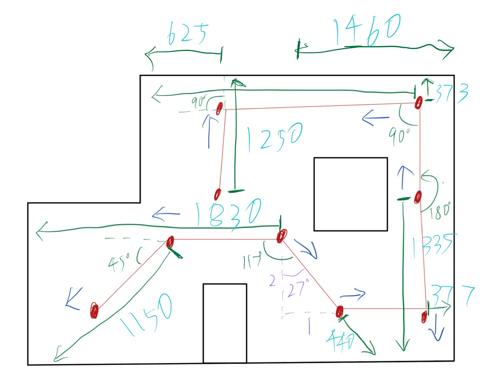

Lab 13 Report
For this open endded lab, I didn't use any fancy technique such as Bayes Filter or Kalman filter.
I just used the most basic and most reliable method to my robot, PID. And I just mapped out the
route by hand, and let the robot perform a go turn go turn secquence through PID to finish the route. Some
places are too far for the TOF to pick up the readings, so I cut those long paths to two, going backward using the
back wall as PID refference, then turn 180 degrees and uses the front wall as the 2nd part's refference. Though it
needed some correction in the process, it is mostly proof of concept that method works if equiped with a better IMU,
the TOF guided PID works very well. Detailed PID refference distance or degree shown in Fig.1.
The Dark blue arrows is the direction the robot facing at each point. The green segmentation is the distance PID will
be refferencing to the pointed wall.

Fig.1 Trajectory Specification
Methology
So I wrote two commands that let the robot goforward and rotate with PID, most of the code is from past labs,
and I tune the distance and angle for PID as shown in Fig.1, then I ran these commands in series in one command block.
Code shown below.
sleep_time = 5
P = 0.1
I = 0.01
D = 10
DC_MAX = 200
time_lim = sleep_time
dest = 1150
ble.send_command(CMD.PID_STOP,str(P)+"|"+str(I)+"|"+str(D)+"|"+str(DC_MAX)+"|"+str(time_lim)+"|"+str(dest))
time.sleep(sleep_time + 0.5)
sleep_time = 3
P = 2
I = 0
D = 100
DC_MAX = 250
time_lim = sleep_time
dest = -48
dead_band = 250
ble.send_command(CMD.PID_TURN,str(P)+"|"+str(I)+"|"+str(D)+"|"+str(DC_MAX)+"|"+str(time_lim)+"|"+str(dest)+"|"+str(dead_band))
Discussion
Result:
From above video, you can see it requires some minor adjustments for some of the rotations. I haven't fine tune it to a good
degree. But it shows that this method works. But I think hardcoding the trajectory isn't the best way to accomplish this lab.
I think with an accurate Bayes'filter, it can adjust itself to the correct point between each point. But it would be a very long
process. If time permitting, it would be interesting to see the effects.